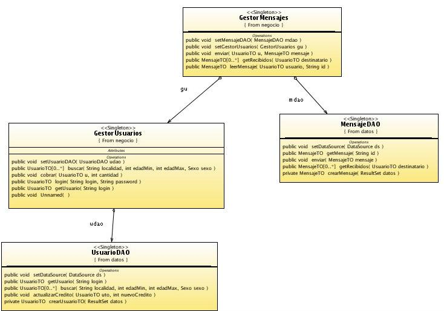

Ejercicios del contenedor de beans de Spring
Instalación de SpringIDE
SpringIDE es un conjunto de plugins de Spring para Eclipse que nos ayudará a trabajar con el framework. Para instalarlo vamos a seguir estos pasos:
- Descargar AJDT (AspectJ Development Tools), un prerequisito para SpringIDE. Descomprimir el zip en la carpeta de eclipse. Los archivos dentro de "plugins" y de "features" del .zip deben "mezclarse" por tanto con los que tenemos ya en Eclipse
- Instalar SpringIDE. El "update site" para actualizarlo desde la web es http://dist.springframework.org/release/IDE, pero lo más rápido es descargarse el "update site" en un .zip e instalar los plugins en modo local. ¡Cuidado! no descomprimáis este .zip en Eclipse, hay que instalarlo a través de la opción Help>Software updates>Add site>Archive. Navegamos en local hasta donde está el .zip en nuestra máquina y nos aparecerá un nuevo "sitio" de actualización con el prefijo jar:/. Istalar este, dándole al botón Install
La aplicación AmigosSpring
En las plantillas de la sesión se encuentra una aplicación denominada AmigosSpring. El objetivo de esta y otras sesiones del módulo consistirá en ir refactorizando la aplicación para introducir características de Spring.
Se trata de una aplicación en la que los usuarios pueden entrar con login y password, ver los otros usuarios en el sistema y mandarles mensajes. De manera resumida, los casos de uso son:
- Hacer login, hacer logout
- Ver la página personal propia. Veremos nuestro crédito actual, además de nuestros datos públicos
- Ver nuestro buzón. Solo es posible si tenemos crédito.
- Leer un mensaje. Solo es posible si nos queda crédito.
- Enviar un mensaje a otro usuario. Cuesta una cierta cantidad.
- Buscar usuarios por varios criterios (sexo, edad, localidad)
- Ver la página personal de otros usuarios
En cuanto a la implementación, la capa de negocio consta de dos objetos (singleton):
- GestorUsuarios: clase que implementa todos los casos de uso relativos a usuarios (registrar, buscar, etc).
- GestorMensajes: implementa todos los casos de uso relativos a mensajes (enviar, leer, etc).
En la capa de acceso a datos también tenemos dos DAOs, uno para mensajes y otro para usuarios.
En la capa de presentación, por cada caso de uso hay un servlet. Todos están dentro del paquete es.ua.jtech.spring.presentacion.servlets.
El siguiente es un diagrama de clases UML de las capas de negocio y acceso a datos.

Para instalar la aplicación:
- La plantilla es un proyecto de Eclipse que debes importar a tu workspace
- En la vista "Navigator" busca la carpeta "database". Dentro tiene un script de Ant para inicializar la base de datos (botón derecho > Run as > Ant build).
- Para activar SpringIDE para este proyecto, dale al proyecto con el botón derecho, Spring tools > Add Spring project nature
- Desplegar la aplicación en el servidor para comprobar que al menos arranca. NO FUNCIONARA EL LOGIN, ya que hay que introducir la configuración de Spring.
Uso de Spring para definir beans y resolver dependencias
Los objetos de la capa de negocio no aprovechan las posibilidades que ofrece el contenedor de Spring. Vamos a transformarlos en beans de Spring y a configurarlos adecuadamente
- Crear un fichero de definición de beans File > New > Spring > Bean definition file. El fichero debería llamarse spring.xml y estar dentro de WEB-INF ya que así está referenciado en el web.xml (aunque también podéis cambiar este último archivo).
- En el spring.xml hay que decirle al framework que busque automáticamente las anotaciones en las clases de ciertos paquetes (consultar en los apuntes el uso de <context:component-scan>)
- En las clases de negocio y DAOS, introducir las anotaciones necesarias para que Spring reconozca los objetos como beans y resuelva las dependencias. Ayudaos del diagrama UML para ver más claramente las dependencias. Tened en cuenta que el DataSource debe ser también en un bean de Spring. También fijaos en que ninguno de los beans tiene estado y por tanto lo más lógico es usar ámbito singleton (recuerda que es el ámbito por defecto).
- En los servlets, hay que introducir el código necesario para acceder a los beans de la capa de negocio. Recordar que se hace a través de una "factoría de beans" que implementa la clase WebApplicationContext. Esto ya lo tenéis hecho para mayor facilidad, salvo en el BuscarUsuariosServlet. Completa su código fijándote en el de los otros servlets (menos en personal y logout que no usan beans) y comprueba que efectivamente se pueden buscar usuarios.
Beans con distintos ámbitos
Supongamos que queremos mantener una lista de "usuarios cuya página hemos visto durante la sesión". Desde el punto de vista de la implementación, esto se podría guardar directamente en la sesión HTTP, pero eso nos obligaría a implementar la gestión desde los servlets. Vamos a usar un bean con ámbito de sesión para guardar la información, lo que nos permitirá implementar el código directamente en negocio.
Usa la clase Visitas del paquete es.ua.jtech.amigosSpring.negocio para definir un bean con ámbito de sesión. Haz que este bean colabore con GestorUsuarios enlazándolo con él. Para ello tendrás que:
- Incluir en el proyecto la librería CGLIB, que permite crear proxys de manera automática para una clase dada (en nuestro caso Visitas)
- En el web.xml se debe definir un listener especial para que funcionen los ámbitos de petición y sesión.
- Definir con las anotaciones apropiadas la clase Visitas como un bean con ámbito de sesión. Hacer que GestorUsuarios dependa de este bean y mantenga una referencia a él
- En el XML de definición de beans (applicationContext.xml), añadir el atributo scoped-proxy="targetClass" a la etiqueta context:component-scan. Recuerda que esto hay que hacerlo porque Spring necesita definir proxies cuando hay dependencias entre beans con distintos ámbitos.
- El método GestorUsuarios.getUsuario() es el llamado cuando hacemos una visita a otro usuario. Por tanto, aquí es donde debemos guardar el login del visitado llamando a addVisita(login) de la clase Visitas.
- En el servlet PersonalServlet debemos sacar la lista de logins visitados accediendo al bean Visitas y llamando a su método getLogins(). Guárdalo como un atributo de la petición llamado "logins" para que el JSP pueda mostrarlo.
- El JSP "personal.jsp" debe mostrar los resultados. Ya lo tienes implementado para mayor facilidad. Fíjate en que usando tags de JSTL vamos iterando por la variable "logins".
Inicialización de las propiedades de un bean con XML
El bean GestorMensajes tiene una constante COSTE_MENSAJE con el precio de enviar un mensaje. Sería mejor tener este dato fuera del fuente para que no fuera necesario recompilarlo si cambia el precio. Usa XML para definir el bean e inicializar el coste desde allí. Puedes eliminar las anotaciones de GestorMensajes, ya no son necesarias.